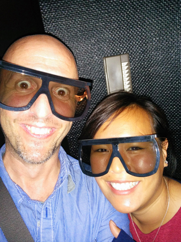
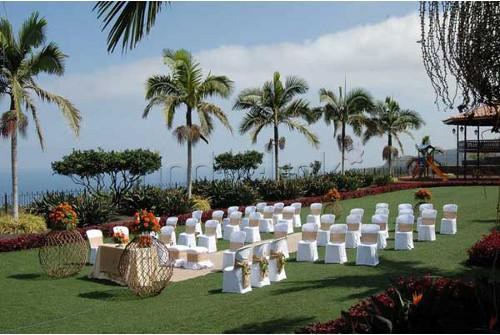

We are doing this, together.
by Nacho Coloma and Janine Lee
Some time ago, a guy met a girl. It was a stupid little thing that got them togetherInvolving a mixture of Abba and some karaoke components. The details are confuse., but they were happy that way. They kept doing stupid for six years and were happy all the way, so decided to sign some papers and make it official.
This is a website to tell you about what is coming, and what to expect.
Meet the bride
This is the bride. To be more exact, this is Meisancita when she cannot see what I am doing with my hands.

Janine was born in Germany, from Malasian-Chinese parents. She speaks fluently German, Cantonese, English and Spanish. She is always happy, but tends to get sick easily
 In health and in sickness. World, meet Meisancita Turtle.
. She loves shoes for some reason. I think all women do.
In health and in sickness. World, meet Meisancita Turtle.
. She loves shoes for some reason. I think all women do.
As a child, Janine did some serious ballet and ended up performing with the Opera of Berlin. She loves comedy and animation films. She likes dancing like nobody is watching (her husband usually is, but in a romantic-and-absolutely-not-creepy-at-all way).
Every year Janine prepares a photo calendar with the most memorable moments that happened to us: the weddings of three of my siblings, our trip to China, that first time she introduced me to the Lee family. These are the best things coming my way for Christmas, every year.
If you are lucky enough to find someone like that, I would strongly recommend to marry herNot this one, though. This one is mine..
Meet the other guy
Nacho  We can all agree that she can do better. Just don't let her know that. is from Tenerife and speaks Spanish, English and like thirty words of German - enough to make him dangerous in a bar. He works with computers all day, and on good days makes them work. He likes sports and reads a lot. He also likes videogames of the kind that rot your brain with adrenaline and leave you useless for the day.
Nacho always liked cooking, but since he is with Janine they are taking it more seriously (they call it conspiring to create delicious shit), mostly because it's a fun way of spending time together. It's also a scary thing, because delicious shit will make you fat.
Every year Nacho helps organizing an event for 2,000 developers. Somehow, this wedding looks way more scary than all that.
So, there will be a wedding
When and where, exactly?
The wedding will happen on June 11 at Hacienda San Felipe,  A location so filled with beauty that we just can't wait to party hard and puke all over the place. an amazing location in the north of Tenerife. The place has separate zones for the actual wedding, dinner and subsequent party. Its location is somehow tricky to find, which is why we will organize a bus to get there.
The plan
The Spanish thing would be to throw some booze and food together and get some pictures, but here is the German version:
| 12:00 - 12:45 | Arrival of guests |
| 12:45 - 13:30 | Actual wedding |
| 13:30 - 15:00 | Appetizers |
| 15:00 - 17:00 | Real food is happening |
| 17:00 - 18:00 | Photos with friends and family |
| 18:00 - 23:00 | Party and open bar |
| 23:30 | The place closes. |
Hacienda San Felipe closes its doors at 00:00 sharp, Cinderella-style. We may continue the party somewhere else, if anybody is still shouting by then.
Fundamentals
Where to stay
Staying close to the north is recommended, specially if you don't have a car. We are recommending to stay in Puerto de la Cruz. Stay tuned to this page for more, we will post concrete places as we know them.
References
This is what others are already saying about our future wedding.
It was amazing... I would never expect to find so many people, so much fun. I will strongly recommend marriage to all my friends.
Gosh, it was like that movie with the tiger. I have a tatoo. Where did I get a tatoo? And what does "papi chulo" even mean?
Bleeergh... baaargh... bhlourgh... fun...
Which is why the wedding will take place in English, though it's not the native language for anybody.
Activities! Fun! Explosions!

We will organize several activities before the event like golf, aquatic park or photosynthesis by the beach. Attendance is optional, but it's a great way of getting the most out of your trip.
Please confirm if you are coming
We would love to have you here, and this is not something that we say lightly. Please let us know if you are coming or not, either way. We understand that not everybody can make it.
Confirm that I am coming Nope, I cannot
Please let us know before March 31, so we can organize. For any questions, please contact either Janine at jleemeisan@gmail.com or Nacho at icoloma@gmail.com.